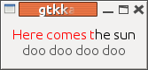
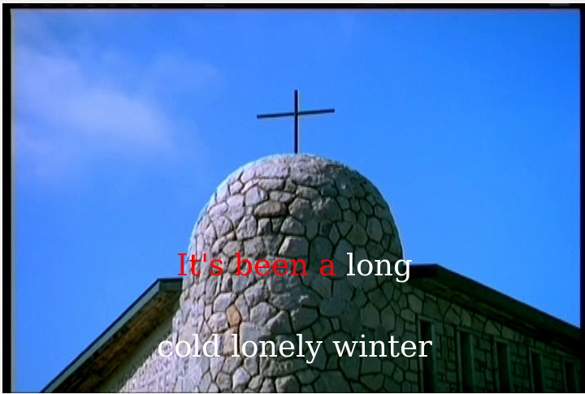

FluidSynth is an application for playing MIDI files and a library for MIDI applications. It does not have the hooks for playing Karaoke files. This chapter discusses an extension to FluidSynth which adds appropriate hooks, and then uses these to build a variety of Karaoke systems.
Source files in this chapter are here .
fluidsynth is a command line MIDI player.
It runs under ALSA with a command line
fluidsynth -a alsa -l <soundfont> <files...>
The FluidSynth API consists of
new_fluid_player
new_fluid_synth
new_fluid_audio_driver
which runs in a separate thread
new_fluid_settings
and modified by calls such as fluid_settings_setstr
A typical program to play a sequence of MIDI files using ALSA follows.
It creates the various objects, sets the audio player to use ALSA
and then adds each soundfont and MIDI file to the player.
The call to fluid_player_play then plays each MIDI file
in turn.
This program is just a repeat of the program seen in the chapter
on
FluidSynth MIDI.
Callbacks are functions registered with an application which are called when certain events occur. In order to build a Karaoke player we need to know
The first of these is fairly straightforward: FluidSynth
has a function fluid_player_load which will
load a file. We can change the code to add a suitable callback into that
function which will give us access to the loaded MIDI file.
Getting Lyric or Text events out of a sequencer is not so easy, since they are never meant to appear! The MIDI specification allows these event types within a MIDI file, but they are not wire-types so should never be sent from a sequencer to a synthesizer. The Java MIDI API makes them available by an out-of-band call to a Meta event handler. FluidSynth just throws them away.
On the other hand, FluidSynth already has a callback to handle
MIDI events sent from the sequencer to the synthesizer. It is
the function fluid_synth_handle_midi_event
and is set by the call fluid_player_set_playback_callback.
What we need to do is to firstly alter the
existing FluidSynth code so that Lyric and
Text events are passed through, and then insert a new playback
callback that will intercept those events and do something
with them while passing on all other events to the default
handler. The default handler will ignore any such events
anyway, so it does not need to be changed.
I have added one new function to FluidSynth,
fluid_player_set_onload_callback
and added appropriate code to pass on some Meta
events. Then it is a matter of writing an onload
callback to walk through the MIDI data from the parsed
input file, and writing a suitable MIDI event callback
to handle the intercepted Meta events while passing the rest
through to the default handler.
These changes have been made to give a new source package fluidsynth-1.1.6-karaoke.tar.bz2 . If you just want to work from a patch file, that is fluid.patch . The patch has been submitted to the FluidSynth maintainers.
To build from this package, do the same as you normally would:
tar jxf fluidsynth-1.1.6-karaoke.tar.bz2
cd fluidsynth-1.1.6
./configure
make clean
make
To get ALSA support, you will need to have installed
the libasound2-dev package, and similarly
for Jack or other packages. You probably won't have many
of them installed, so
don't run make install or you will overwrite
the normal fluidsynth package which will
probably have more features.
The previous program modified to just print out
the lyric lines and the lyric events as they occur
is karaoke_player.c:
Assuming the new fluidsynth package is in an immediate subdirectory, to compile the program you will need to pick up the local includes and libraries
gcc -g -I fluidsynth-1.1.6/include/ -I fluidsynth-1.1.6/src/midi/ -I fluidsynth-1.1.6/src/utils/ -c -o karaoke_player.o karaoke_player.c
gcc karaoke_player.o -Lfluidsynth-1.1.6/src/.libs -l fluidsynth -o karaoke_player
To run the program, you will also need to pick up the local library and the soundfont file:
export LD_LIBRARY_PATH=./fluidsynth-1.1.6/src/.libs/
./karaoke_player /usr/share/soundfonts/FluidR3_GM.sf2 54154.mid
The output for a typical KAR file is
Load callback, tracks 1
Track 0
Loaded event #
Loaded event 0
Loaded event 0
Loaded event 0
Loaded event 1
Loaded event
...
Callback: Playing lyric event 2 #
Callback: Playing lyric event 2 0
Callback: Playing lyric event 2 0
Callback: Playing lyric event 2 0
Callback: Playing lyric event 2 1
Callback: Playing lyric event 3
While there are many ways in which Karaoke text can be displayed, a common pattern is to display two lines of text, the currently playing line and the next one. The current line is progressively highlighted and on completion is replaced by the next line.
In the Java chapter we did that. But the Java libraries have not been polished and are distinctly slow and heavyweight. They also seem to be low on Oracle's development schedule for Java. So here we look at an alternative GUI and make use of the FluidSynth library. The Gtk library is chosen for reasons outlined in an earlier chapter on Gtk.
The first task is to build up an array of lyric lines as the file is loaded. We are asssuming KAR format files with upfront information as to title, etc, prefixed by '@', and newlines prefixed by '\'.
struct _lyric_t {
gchar *lyric;
long tick;
};
typedef struct _lyric_t lyric_t;
struct _lyric_lines_t {
char *language;
char *title;
char *performer;
GArray *lines; // array of GString *
};
typedef struct _lyric_lines_t lyric_lines_t;
GArray *lyrics;
lyric_lines_t lyric_lines;
void build_lyric_lines() {
int n;
lyric_t *plyric;
GString *line = g_string_new("");
GArray *lines = g_array_sized_new(FALSE, FALSE, sizeof(GString *), 64);
lyric_lines.title = NULL;
for (n = 0; n < lyrics->len; n++) {
plyric = g_array_index(lyrics, lyric_t *, n);
gchar *lyric = plyric->lyric;
int tick = plyric->tick;
if ((strlen(lyric) >= 2) && (lyric[0] == '@') && (lyric[1] == 'L')) {
lyric_lines.language = lyric + 2;
continue;
}
if ((strlen(lyric) >= 2) && (lyric[0] == '@') && (lyric[1] == 'T')) {
if (lyric_lines.title == NULL) {
lyric_lines.title = lyric + 2;
} else {
lyric_lines.performer = lyric + 2;
}
continue;
}
if (lyric[0] == '@') {
// some other stuff like @KMIDI KARAOKE FILE
continue;
}
if ((lyric[0] == '/') || (lyric[0] == '\\')) {
// start of a new line
// add to lines
g_array_append_val(lines, line);
line = g_string_new(lyric + 1);
} else {
line = g_string_append(line, lyric);
}
}
lyric_lines.lines = lines;
printf("Title is %s, performer is %s, language is %s\n",
lyric_lines.title, lyric_lines.performer, lyric_lines.language);
for (n = 0; n < lines->len; n++) {
printf("Line is %s\n", g_array_index(lines, GString *, n)->str);
}
}
This is called from the onload callback
int onload_callback(void *data, fluid_player_t *player) {
long ticks = 0L;
lyric_t *plyric;
printf("Load callback, tracks %d \n", player->ntracks);
int n;
for (n = 0; n < player->ntracks; n++) {
fluid_track_t *track = player->track[n];
printf("Track %d\n", n);
fluid_midi_event_t *event = fluid_track_first_event(track);
while (event != NULL) {
switch (fluid_midi_event_get_type (event)) {
case MIDI_TEXT:
case MIDI_LYRIC:
/* there's no fluid_midi_event_get_sysex()
or fluid_midi_event_get_time() so we
have to look inside the opaque struct
*/
ticks += event->dtime;
printf("Loaded event %s for time %d\n",
event->paramptr,
ticks);
plyric = g_new(lyric_t, 1);
plyric->lyric = g_strdup(event->paramptr);
plyric->tick = ticks;
g_array_append_val(lyrics, plyric);
}
event = fluid_track_next_event(track);
}
}
printf("Saved %d lyric events\n", lyrics->len);
for (n = 0; n < lyrics->len; n++) {
plyric = g_array_index(lyrics, lyric_t *, n);
printf("Saved lyric %s at %d\n", plyric->lyric, plyric->tick);
}
build_lyric_lines();
}
The standard GUI part is to build an interface consisting of two labels, one above the other to hold lines of lyrics. This is just ordinary Gtk.
The final part is to handle lyric or text events from the sequencer. If the event is a '\', then the current text in a label must be replaced with new text, afer a small pause. Otherwise, the text in the label has to be progressively coloured to indicate what is next to be played.
In the earlier chapter on Gtk we discussed using Cairo to draw in pixbufs, and Pango to structure the text. The Gtk Label understands Pango directly, so we just use Pango to format the text and display it in the label. This involves constructing an HTML string with the first part coloured red and the rest in black. This can be set in the label, and there is no need to use Cairo.
The program is gtkkaraoke_player.c
Warning: the following program crashes regularly
when trying to copy a Pango attribute list in the Gtk code
for sizing
a label. Debugging shows that the Pango copy function
is set to NULL somewhere in Gtk, and shouldn't be.
I have no fix as yet and haven't replicated the bug
in a simple enough way to log a bug report.
When run it looks like

The chapter on Gtk showed how to play a background video with images (using Pixbufs), text (using Cairo) and coloured text (using Pango). We can extend that by adding in the dynamic text display for playing Karaoke.
We capture each lyric line in a structure which keeps the whole of the line, the part that has been sung already, the Pango markup for the line and the Pango attributes:
typedef struct _coloured_line_t {
gchar *line;
gchar *front_of_line;
gchar *marked_up_line;
PangoAttrList *attrs;
} coloured_line_t;
This is updated each time a MIDI Lyric event occurs, in a thread listening to the FluidSynth sequencer.
A separate thread plays the video, and on each frame overlays
the frame image with the current and next lyric.
This is set into a GdkImage for display
by Gtk.
The program is gtkkaraoke_player_video_pango.c
The application looks like

By extending FluidSynth it an be made into a Karaoke player in various ways. It is quite heavy in CPU usage though. On my laptop, the final version runs at about 100% CPU.